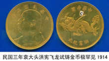

袁大头
袁大头是民国时期主要流通货币之一，“袁大头”是对袁世凯像系列硬币的口语俗称，严谨点说叫“袁世凯像背嘉禾银币”。北洋政府为了整顿币制，划一银币，于民国三年（1914年）二月，颁布《国币条例》十三条，决定实行银本位制度。《国币条例》规定："以库平纯银六钱四分八厘为价格之单位，定名为圆"，"一圆银币，总重七钱二分，银八九，铜一一"，"一圆银币用数无限制"，即以一圆银币为无限法偿的本位贷币。根据这一规定，于1914年12月及1915年2月， 先后由造币总厂及江南造币厂开铸一圆银币，币面镌刻袁世凯头像，俗称"袁头币"或"袁大头"。
铸造跨度从1914年至1951年，总发行量超过 7.5 亿枚。该系列币分别重26．6克、13．3克、5．3克和2．6克；成色分别为89.1%、84．5%、80．4%和82．5%；该币的外环主要是直齿边，另外，还铸有少量工字边和花齿边。 [1]
中文名
袁大头
外文名
'Yuan big head'coins
时 间
1914年-1929年
背 景
袁世凯出任大总统
发行者
民国政府、军阀、中共等
相关法律
《国币条例》
时 代
民国北洋时期（民国时代通用）
别 称
袁世凯像背嘉禾银币、袁世凯银元
历史
清代国币称为龙洋，以银币为主币，主要有光绪元宝、大清银币、宣统元宝等，总重量为（26.3--27克），含纯银六钱四分八厘（25.7856808克），其含银量89%进行铸造 [2] 。
清朝灭亡之后，1912年4月袁世凯出任大总统。北洋政府鉴于当时铸币、纸币十分复杂，流通的中外货币在百种以上，规格不一，流通混乱，折算繁琐，民众积怨，同时也想借助货币改制以解决军费问题，便决定铸发国币。袁世凯为了提高自己的统治地位，把他的头像铸于币面，“袁大头”由此而来。
1914年2月7日，袁世凯以大总统令形式公布了《国币条例》及《国币条例施行细则》，其主要内容是规定钱币的铸造发行权归民国政府所有，原先的各个官局所铸造发行的1元银元，由民国政府兑换并改铸，在一点的时期内，承认它们的价值等同于国币1元的价值。国币中的主币是1元银元，其重量是库平纯银6钱4分零8毫（6.408钱），材质是银占89%，铜占10%，锡占1%，一枚成品银元的重量是7钱2分。规定国币种类有银币4种（壹圆、中圆、贰角、壹角）、镍币一种（五分）、铜币五种（二分、一分、五厘、二厘、一厘）。正面镌袁世凯侧面头像及发行年号，背面铸嘉禾纹饰与币值。《国币条例》公布同年先在天津造币厂铸造“袁大头”壹圆银币，后在南京、广东、武昌等造币厂陆续铸造。 [3]
当时钱币的换算关系和现在一样，以十进位，1元等于十角，一角等于十分，一分等于十厘。自从《国币条例》公布以后，天津造币厂就开始铸造袁大头1元银元，后来，南京、广东、武昌等造币厂也都开始陆续铸造发行袁大头银元。由于袁大头1元银元币型规整，图案新颖，有明确的重量和成色，容易识别，因此，袁大头银元很快就被老百姓接受，并很快在全国的范围内流通。因袁大头壹圆银币币型划一，成色、重量有严格规定，很快受到了社会认同和接受，在国内金融市场上逐步取代了清朝的龙洋，成为流通领域的主币。
铸造量
由于袁大头银元铸造的时间长，参与铸造的造币厂多，因此，现在存世的袁大头银元的版别是非常多的，下面详细介绍一下：首先说民国三年袁大头银元的版别就和其他年份都不一样，民国三年袁大头银元的正面图案是袁世凯的侧面头像，上面的文字是：中华民国三年，在‘年’字的后面没有‘造’，其他年份的袁大头银元的‘年’字后面都加上了一个字“造”。
“袁大头”的铸造量很大，仅南京造币厂在民国四年二月至民国五年的近两
极其罕见袁大头金币
年时间内，就达379819210元。还有资料介绍，仅壹元“袁大头”就铸造了75000万枚，民国三年的“袁大头”至少到1929年还在铸造，但是现在存世量却非常少，好多在解放时期都被收回，重新融化。最晚的是“O”版三角圆“袁大头”银元，上面虽然写着“中华民国三年”，但并不是民国政府铸造的，而是1951年期间由中国共产党铸造，铸造局为沈阳造币厂。因为当时新中国刚建国，我国云南、西藏等西南边陲少数民族居聚的地区在货币流通方面只认可信誉高的“袁大头”银元，为了稳定边疆地区政治与经济，特别发行了该版银元，以“O”版和“三角圆”为暗记。后来该版币逐渐被中国人民银行收兑，民间所剩不多，是收藏的珍贵品种。 [4]
钱币样式
“袁大头”银币的正面图案，中间为袁世凯戎装左侧面像，民国3年版
的上方为“中华民国三年”，民国8、9、10年版的为“中华民国*年造”；背面图案均是两株交叉的稻穗，中央为“壹圆”、“中圆”（伍角）、“贰角”、“壹角”字样，后几种上方分别有“每二枚当一圆”、“每伍枚当一圆”和“每十枚当一圆”的字样；正面镌袁世凯侧面头像及发行年号，背面铸嘉禾纹饰与币值，袁大头的官版的成色为89.1%；该币的外环主要是直齿边，另外，还铸有少量工字边和花齿边。在该系列币中，民国3年、9年、10年等一元币较为常见，民国八年的则较少些。但是，在民国三年的“袁大头”中，袁世凯“签字版”则出类拔萃地被收藏爱好者所钟爱。一类是民国三年天津造币厂试铸的意大利制版人的英文签字版；另一类是袁世凯的左侧面像后颈部位的签字版(大写英文L·GIORGI)。以上两类（5种）均为样品币，未曾正式流通使用，所以存世不多。
民国三年一九一四年。北洋军阀政府正式铸造袁世凯头像银币。先在天津造币厂铸造袁大头壹圆银币。后在南京广东武昌等造币厂陆续铸造。民国时期。军阀混战。各地军阀纷纷私铸袁大头。导致存世的袁大头质量良莠不齐。而袁大头金币。多作为纪念币。铸造量甚少。存世量极罕。
一些币友询问为什么真品的珍品币近来却卖不出好价钱呢？笔者思索其中主要原因是银币中，尤其是高档银币中各种材料和手段制造的仿伪品太多，几乎占了90%以上。尤其是近年来以激光照排制版为手段，以真银子造的“珍稀”假银币不但屡见不鲜，而且其“真实”、清晰”度等，比真币还要“真”！人们真假难分，使许多人上当受骗；另外，真正的收藏爱好者因财力有限，明知是枚好币，但因囊中羞涩，只能望币兴叹等，这便是珍品币卖不出好价钱的主要原因。所以，实际价值、“参考价”与售价的关系也并非一成不变的，所谓“货卖买家”，其中也有一些运气的成分，一般情况是拍卖会上的价格比较可观。
历史意义
“袁大头”在货币收藏界被称为银元之宝，它是中国近千种近代银币中流传最广、影响最大的银元品种，也是近代中国币制变革中的一个重要角色。 [5]
光绪年间，由于各省铸造银元，却和当初铸造纹银一样，不仅重量和成色不能统一，数量上也难以控制。辛亥革命爆发，各省因急于用款，不仅加工赶铸银元，还滥铸铜圆，滥发钞票和军用票，币制更加混乱。
民国建立后，中央财政几乎有出无入，财政危机十分严重。从短期来说，发行纸币亦不失为敛财妙法，只是纸币是银元的代表者，是兑换券，若没有银元的充分准备和广泛流通，纸币信用亦难确立。此时此刻，币制改革已是刻不容缓———“袁大头”银元正是基于此而诞生的，也是银元发展的必然结果。经过多年铸造，加上其信誉很高，“袁大头”数量增多，流通渐广，虽僻处边陬，也有其踪迹。“袁大头”银元的通行促进了银元的统一，也为“废两改元”准备了条件。
收藏价值
袁大头普通币上面（正面）为袁世凯左侧五分像，上铸“中华民国X年”或“中华民国X年造”中文繁体，具有很高的历史文化研究价值，寓意“民主、共和、宪政及君主立宪“之思想希冀。
下面（背面）为嘉禾之图案， [6] 古称生长奇异的禾，古人以之为吉祥的征兆。亦泛指生长茁壮的禾稻。典出《书·微子之命》：“ 唐叔 得禾，异亩同颖，献诸天子。铸在钱币之上寓意国家重视农桑、以民生为本；其另一思想取其家和之谐音，寓意”家和万事兴“之意；
铸币之上当政者有国泰民安、吉祥如意之愿景，民间收藏，寓意"家和万事兴"之吉祥之宝，故有很高的收藏研究价值。
主要版别
1、民国三年版中的主要版别
民国三年版正面为袁世凯侧面像，上列“中华民国三年”。“年”字后没有“造”字，其他年版都在“年”字后面有一“造”字。三年版“民”字中有一“点”，而其他年版民字无“点”。三年版有老模和新模两种模具，老模具为185道边齿，新模具为170道边齿，铸量都较多，属普通流通版。铸造量较少的版别
有：（1）“O”记版。即在嘉禾图案中有“O”形暗记，在嘉禾结带处呈横“8”字形，左上方的带孔中有一极小的“O”形圆圈，而且袁像下巴前衣领未封领，肩章较宽，五星比较凸出。O版又分普通O版、O版大肩章‘华’字有横版、O版小肩章长叶修壹版、O版小肩章长叶修壹开口贝版、O版中肩章错配长叶修壹版、O版（中肩章/小肩章）直芒版、O版大肩章直芒版、O版中肩章实心O版、O版中肩章无O版、O版大肩章凸粗O版、O大肩章版穿心O版、O版大肩章双O版、O版实心O（眼泪版）、O版三角圆、O版三角圆（睁眼版）、O版三角圆‘圆’字不封口、O版三角圆‘华’字有横、O版三角圆错配中肩章、O版小肩章（O版无O ）。
2．粗发版。袁头发较粗，发型呈波浪。嘉禾结带没有形成纵横交“8”的结花，右边一束嘉禾结带处形成一个不规则的圆。
3．三角圆版。此币背面圆字内的“口”字形成“△”形，而其他版别是“开口”形。
4．开口贝版。此币壹圆的“圆”字内“贝”字最下一横未与竖笔连接，形成“开口贝”。该版袁像肩章条纹明显，袁眼中有一从上至下的直线，俗称“睁眼”，这一特征也是其他版别未见的。
5．加铸“甘肃”两字版。此币系甘肃兰州造币厂沿用民国三年版旧模，在袁像左右加铸“甘肃”两字，其余与开口贝版相同，铸量仅数万枚。
6．签字版。此币甚少见，天津造币厂试铸样币，并未流通。该币在袁像右侧刻有一竖行英文字母“L.GioRGi”，是在华外籍铸币专家意大利雕刻师“鲁尔治-乔治”签名缩写。
7．“T”字边、鹰洋边。此两种币均稀见，系天津造币总厂试铸样币。正、背图案与流通的一般“袁大头”相同，仅在边齿上有区别，为“T”字形边或鹰洋币形边。
另外，尚有断民版、大扣版、S版、厚币版、勾点华版、提点华版、背双星版、竹节花版、雁尾芒版、提点华孕珠版、锐角芒版、大胡须版、大耳朵版等等。
2、民国八年版“袁大头”主要版别
八年版中的普通版流通量较多，钢模由外国代制，文字书写符合汉字结构，字形
没有变异，背图嘉禾亦规范。特征是正面袁像胸襟花饰前内边齿多一细齿，而无一空档（其他年号版有一空档）。另外有几种铸量较少的版别，主要区别是在“造”字的书写上不同：
1．“造”字的第四笔向下伸出，形成了“牛”字，但与下面的“口”字不相连，故称“牛”字版。
2．有的“牛”字与“口”字相连，故称连口版。
3．“造”字中的“口”字少了上横一笔，形成缺口，称缺口版。
4．“造”字中的“口”字很扁，“口”字中看不见中孔，称无口心版。
此外还有横点年版、竖点年版、草头华版、T点年版、左芒勾版、孕六珠版、双孕六珠版、结上点版、结内点版、两芒弯勾版等等。
3、民国九年版中的主要版别
九年常见版别有九年精发、九年精发三年背、九年中发、九年中发小嘉禾、九年粗发、九年海南版。此外比较稀少的版本有九年牛口造7点年、九年缺口造、九年大肩章。九年大头除海南版外,其余常见版式的实币雕工都异常的精美,可以说比三年的天津标准版还漂亮,尤以细字版的为甚,无论是字体,人像及嘉禾图案都很精致,这也是九年的一大特点。下面分别介绍：
1、九年精发：此版常见，可能由于精刻原因，原光好品相的在九年三大版（粗中精）中最多见其主要特征为：整币精雕细刻，精美为大头系列之最。头发一丝丝，胡须立体感强，胡须下缕为三四缕（中发版仅有两缕，这是区分中发版精发版的简易方法），背小嘉禾，九点钟位置缺一小内齿（最易区别九年精发三年背之处），左二穗粒闭芒，下穗粒尾。
2、九年精发三年背：此版相对少见，原光好品亦然。其主要特征为：整币精刻，头像面与九年精发版同，其与九年精发版之区别主要在嘉禾面：大嘉禾（与中发同），九点钟不缺小内齿，左二穗粒开芒，左下穗粒尾不翘芒。
3、九年中发：少见些，原光好品较粗发版多见而较精发版少见。其主要特征为：整体包括头发较粗发版精刻些，发呈一缕缕；字体较粗发版纤细，背为大嘉禾，类同于三年背。
4、九年中发小嘉禾：人像及字体为九年中发特征，背配小嘉禾（比普通嘉禾缩小一圈,与内齿距离相远些，故称小嘉禾），嘉禾面九点钟位置缺一小内齿，左上二穗粒开芒（请注意：九

年精发版也是小嘉禾，但此穗粒为不开芒即闭芒，此为此版与九年精发背区别之处），左下穗粒尾翘芒。
5、九年粗发：此版多见，但原光好品相的并不易得。其主要特征为头发粗，字体粗，年字第一划为圆头，造口上有圆点暗记，中华两字常见断笔（偶见不断笔的），背嘉禾为大嘉禾，类同于三年的背就是上文说的粗字版。
6、九年海南版：此版有资料显示为解放战争末期海南币厂所铸（隶属广东，也有称广州版），铸量不多，由于年代较近，原光好品不少见。其主要特征为：整体为九年精发特征（发细，背小嘉禾），但可能由于模具或工艺等铸造原因，整币呈模糊漂浮之感，根本无法体现九年精发之精美之处。
7、牛口造7点年：此版少见，原光好品相较难找。其主要特征为：整体（头像及嘉禾）为九年中发版特征，造为牛口造，年点呈7状，九字丿起笔带弯。
8、九年缺口造：此版存世稀少，天堂所见不过十数枚。其主要特征为：整体为九年中发版特征，唯一不同的是“造”字的口缺上面一横，为缺口造，而且缺口干脆利落，不同于十年缺口的藕断丝连。
9、九年大肩章：此版较稀，原光好品绝对难找。其主要特征为：整体类同于九年中发版，但肩章偏大，肩星大而扁，背嘉禾有大头十年的特征（但不完全相同），即右穗粒尾下弯钩芒。另外，左穗粒有小翘芒。
九年版中主要有袁像未封领版和大耳版两种；前者为普通版，铸量较多，后者铸量较少。大耳版指袁像耳朵比其他版要大，而衣领全封领，此版别含银量较高。
此外还有缺口造版、7点年连口造版、精发版、右芒勾版、断笔华版、大耳版等等。
4、民国十年版中的主要版别
十年版中的普通版，其图案文字与一般“袁大头”无大差别，铸量较大。另外有一些把“年”字中的一点写成一竖或“7”字形，但铸量较少。
此外还有T点年版、缺口造版、半缺口造版、双缺口造版、连口造版、十年八年版、十年九年版、开渠华版、正星版、偏星版、竖点年版、开口中版、右缺口中版、7点年大胡须版、大点年版、下缺口造版、败笔造版、六角星版、连口造无珠版等等。[3]
“袁大头”壹圆银币除上述版别外，还有许多大同小异的版别，难以一一例举。